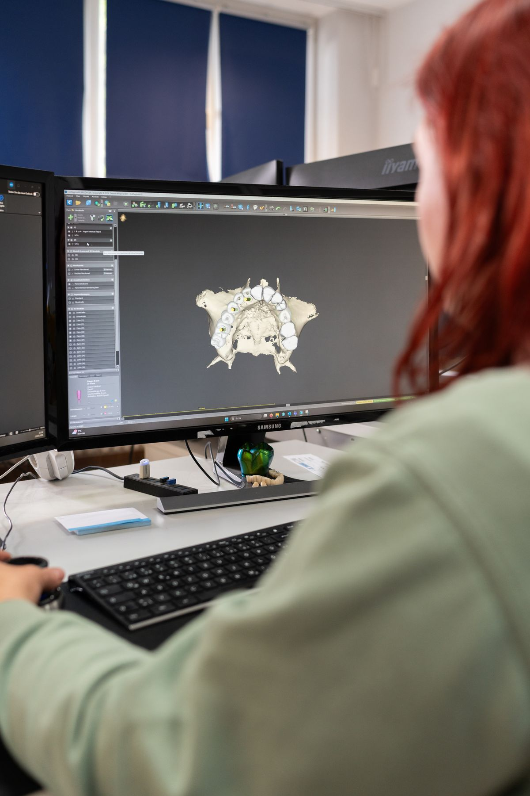
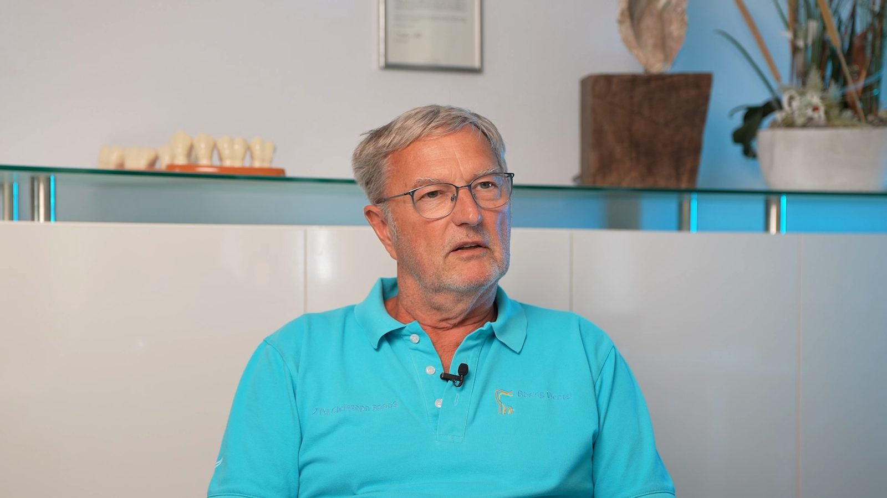
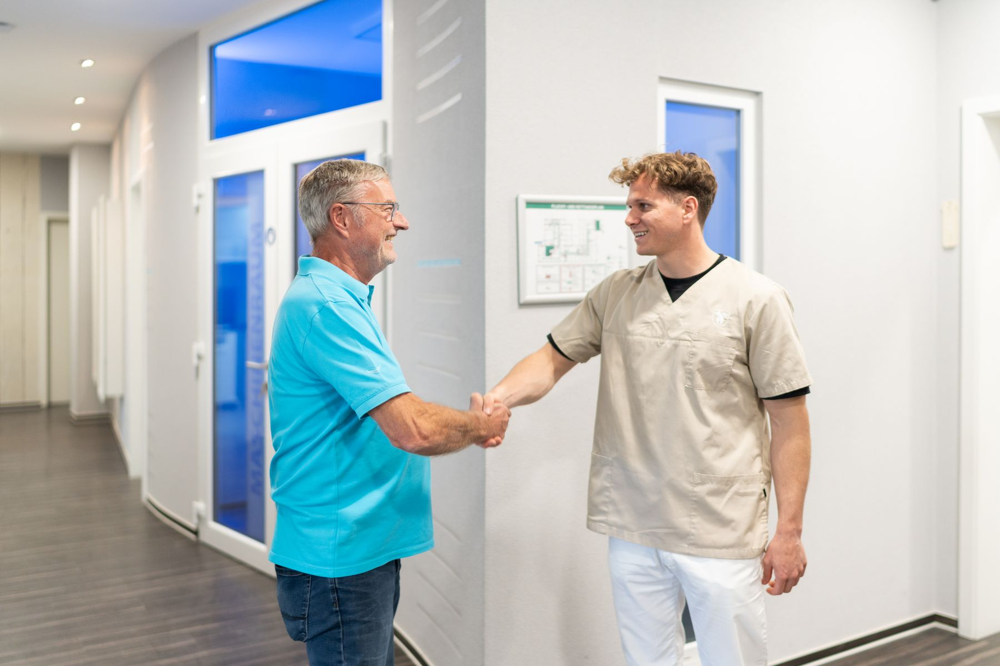
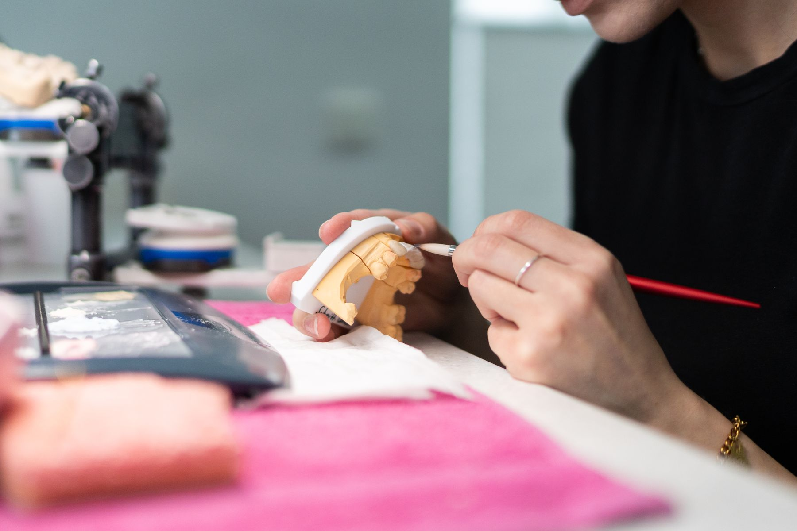
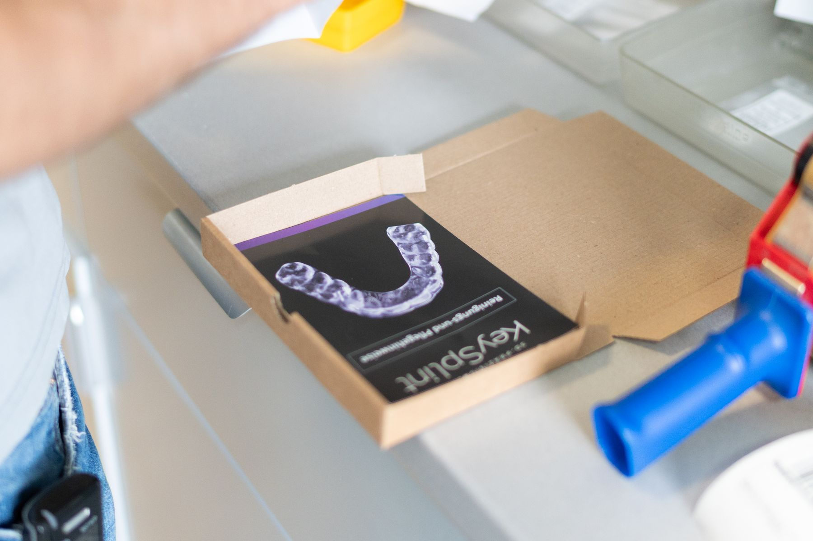
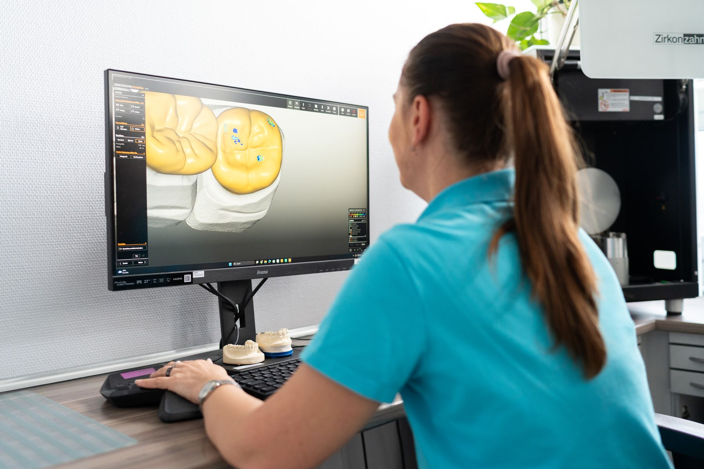
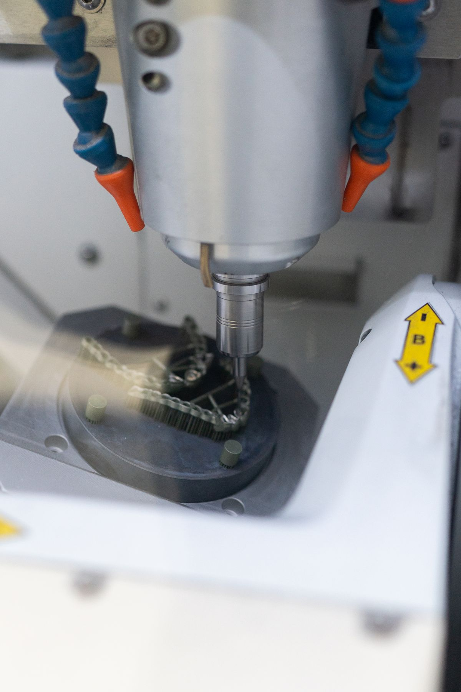
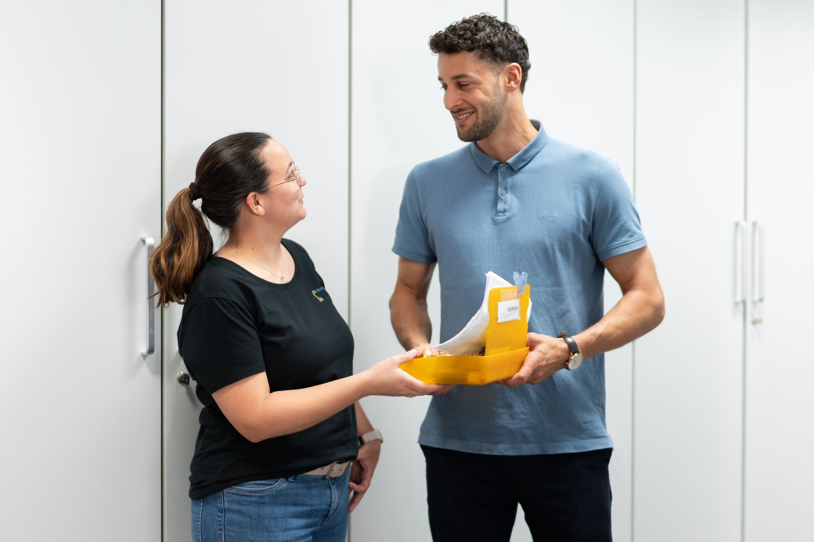
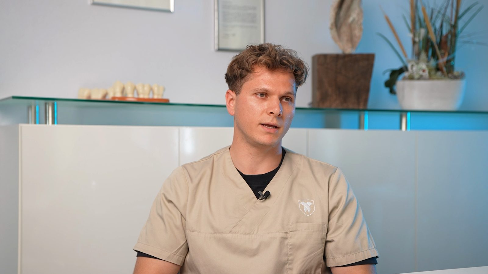
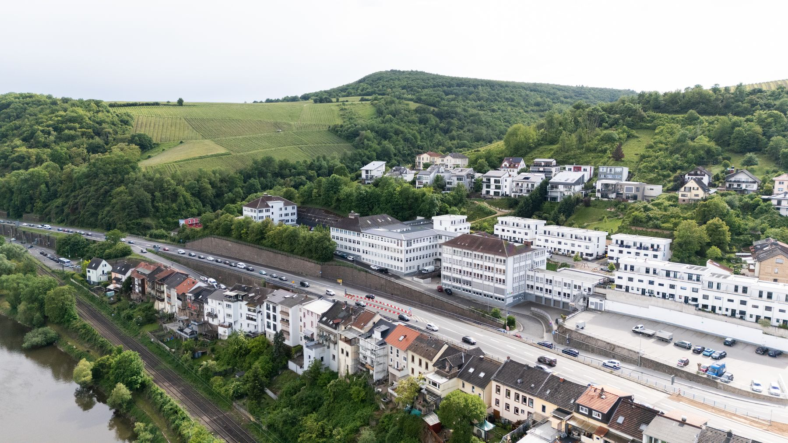

Festsitzender Zahnersatz
Individuelle Kronen, Brücken, Veneers, Inlays, Onlays und Implantatversorgungen.
Ein Laborwechsel ist für Ihre Praxis ein Risiko. Deshalb fangen wir klein an: Sie geben uns eine Arbeit, wir liefern sie mit fester Ansprechperson, digitaler Schnittstelle und Anprobe vor Ort. Sie sehen an einem echten Fall, wie wir arbeiten, bevor Sie etwas umstellen.
Rückmeldung innerhalb von 48 Stunden, unverbindlich und ohne Vertragsbindung.
4,3 von 5,0 bei 11 Google-Rezensionen
Imagevideo, 1:02 Minuten, mit Untertiteln. Es liegt auf unserem eigenen Server und wird erst geladen, wenn Sie auf Abspielen klicken. Dabei werden keine Daten an Dritte übertragen.

Im Video oben führt ZTM Christoph Bösing in einer Minute durch sein Labor in Bingen am Mittelrhein. Sie sehen die Arbeitsplätze der Zahntechnik, die Konstruktion am Bildschirm und die Fertigung mit Fräse und Drucker. Der für Praxen wichtigste Satz daraus: Scandaten lassen sich unabhängig vom System direkt weiterverarbeiten.
Die vier Punkte, die Praxen beim Laborwechsel am häufigsten nennen.
ZTM Jan Kanthack und ZTM Sylvia Staab betreuen die Praxen. Beide sind seit über 20 Jahren im Labor, Sie erklären Ihren Fall also nicht jedes Mal neu.
Sirona Connect, DS-Core, 3Shape Connect und Medit. Scandaten lassen sich unabhängig vom System direkt weiterverarbeiten, Bilder und Patientendaten laufen über ein eigenes Kundenportal nach DSGVO.
Individuelle Farbnahme und Anprobe in Ihrer Praxis, bei aufwändigen Galvanoarbeiten auch die Verklebung. Kurze Wege ab Bingen machen das möglich.
CAD/CAM und 3D-Druck für Präzision und Tempo, klassische Handarbeit dort, wo sie das bessere Ergebnis bringt. Sie müssen sich nicht für eine Welt entscheiden.
Vier Schritte, kein Vertrag, kein Wechsel auf einen Schlag.
Sie schicken das Formular oder rufen an. Wir melden uns innerhalb von 48 Stunden zurück.
Wir melden uns und vereinbaren ein Telefonat oder ein persönliches Kennenlernen. Auf Wunsch zeigen wir Ihnen das Labor in Bingen.
Sie schicken uns eine Arbeit, wir stimmen sie eng mit Ihnen ab. Sie beurteilen Passung, Ästhetik und Termin.
Passt es, übernehmen wir mehr. Passt es nicht, war es ein Fall und keine Umstellung. Danach betreut Sie dieselbe Ansprechperson weiter.
Zahnersatz von A bis Z: vom einzelnen Inlay bis zur Alignertherapie, analog und digital im eigenen Haus.

Individuelle Kronen, Brücken, Veneers, Inlays, Onlays und Implantatversorgungen.

Maßgeschneiderte Totalprothesen sowie Teleskop- und Geschiebeversorgungen.

TAP Schienen der Scheu Group und ERKODENT Silensor-SL. Bei diagnostizierter Schlafapnoe trägt die Krankenkasse seit 2023 die Kosten.

Unsichtbare, herausnehmbare Schienen bei einfachen bis mittelschweren Fehlstellungen. Planung und Produktion regional.

Intraoralscan-Dienste, Konstruktion am Bildschirm, Fräsen und 3D-Druck, dazu Kieferregistrierung mit zebris JMA-Optic.

Individuelle Farbnahme, Anprobe vor Ort und Verklebung bei aufwändigen Galvanoarbeiten.

Auch dieses Video wird erst nach Ihrem Klick geladen.
Sebastian Huber berichtet, wie die Zusammenarbeit im Alltag läuft: kurze Wege, persönliche Betreuung und ein verlässlicher Ablauf. Er hebt hervor, dass er jederzeit anrufen kann und die Arbeit dann da ist, wenn er sie braucht, ohne unschöne Überraschung. Am Ende spricht er eine klare Empfehlung aus.
Laufzeit 1:17 Minuten.
„Man kann jederzeit anrufen und hat eine persönliche Betreuung."
Sebastian Huber, Zahnarztpraxis Dr. Trunk
„Ein Team voller sympathischer Fachleute. Die Zusammenarbeit mit diesem innovativen Labor ist erfrischend und bereichernd."
Zahnarztpraxis Al-Nawas & Schulz
„Bösing Dental: ein starker und verlässlicher Partner in allen Bereichen der Zahnmedizin. Top ausgestattet für modernsten und hochästhetischen Zahnersatz."
Dr. Johannes Christmann, Zahnmedizin Ingelheim
Unser Labor liegt in der Franz-Kirsten-Straße in Bingen, zwischen Rheinhessen, Nahe und Rhein-Main. Das macht Farbnahmen und Anproben in Ihrer Praxis möglich, ohne dass ein halber Tag dafür draufgeht.
AnfahrtFranz-Kirsten-Straße 1, 55411 Bingen am Rhein, Gebäude B, Eingang B8. Besucherparkplätze direkt vor dem Haus, Bus 602 und 234.

Der übliche Resin-Druck erzeugt Sondermüll aus Restharz und Alkohol. Bösing Dental hat deshalb ein Verfahren mit einem vollständig recycelbaren Bio-Compound-Filament aus Maisstärke entwickelt, zusammen mit Qitech. Aligner-Modelle und Diagnostikmodelle werden nach Gebrauch geschreddert und das Material wieder verwendet.
Für Praxen, die selbst auf Nachhaltigkeit achten, ist das ein Argument gegenüber Patienten.
Bösing Dental fertigt in der Franz-Kirsten-Straße 1, 55411 Bingen am Rhein, Gebäude B, Eingang B8. Praxen erreichen das Labor unter der Telefonnummer 06721 491680 und per E-Mail an info@boesing-dental.de. Das Labor ist montags bis freitags von 08:00 bis 17:00 Uhr erreichbar. Besucherparkplätze liegen vor dem Haus, die Buslinien 602 und 234 halten in der Nähe.
Die Betreuung der Praxen liegt bei ZTM Jan Kanthack und ZTM Sylvia Staab. Beide arbeiten seit über 20 Jahren bei Bösing Dental, dadurch erklärt eine Praxis ihren Fall nicht bei jedem Anruf neu.
Bösing Dental meldet sich innerhalb von 48 Stunden. Wer schneller sprechen will, erreicht das Labor montags bis freitags von 08:00 bis 17:00 Uhr unter 06721 491680.
Bösing Dental arbeitet mit Sirona Connect, DS-Core, 3Shape Connect und Medit. Für Bilder und Patientendaten steht ein eigenes Kundenportal nach DSGVO bereit, die Abrechnungsdaten laufen über DeLaKom als XML oder PDF.
Bösing Dental fertigt in beiden Workflows. CAD/CAM und 3D-Druck laufen im eigenen Haus, daneben besteht der analoge Workflow mit klassischer Handarbeit. Die Entscheidung fällt pro Fall und nicht nach Prinzip.
Ja. Individuelle Farbnahmen und Anproben führt Bösing Dental auf Wunsch in der Praxis durch, bei aufwändigen Galvanoarbeiten auch die Verklebung vor Ort.
Bösing Dental fertigt Zahnersatz von A bis Z: festsitzenden Zahnersatz mit Kronen, Brücken, Veneers, Inlays, Onlays und Implantatversorgungen sowie herausnehmbaren Zahnersatz mit Totalprothesen, Teleskop- und Geschiebeversorgungen. Dazu kommen Schienen, darunter Schnarcherschienen, und die Alignertherapie SimplyDent, alles im eigenen Haus in Bingen am Rhein.
Bösing Dental fertigt TAP Schienen der Scheu Group und ERKODENT Silensor-SL. Bei diagnostizierter obstruktiver Schlafapnoe übernimmt die Krankenkasse seit 2023 die Kosten vollständig.
Unter dem Namen Print Green hat Bösing Dental gemeinsam mit Qitech einen 3D-Druck mit recycelbarem Bio-Compound aus Maisstärke aufgebaut, statt Restharz und Alkohol als Sondermüll zu entsorgen. Dafür gab es 2019 den Innovationspreis des Landes Rheinland-Pfalz und 2023 den Green Dental Award.
Schreiben Sie uns kurz, worum es geht. Wir melden uns innerhalb von 48 Stunden und klären am Telefon, ob wir zu Ihrer Praxis passen.
Wir melden uns innerhalb von 48 Stunden bei Ihnen. Wenn es schneller gehen soll, erreichen Sie uns unter 06721 491680.